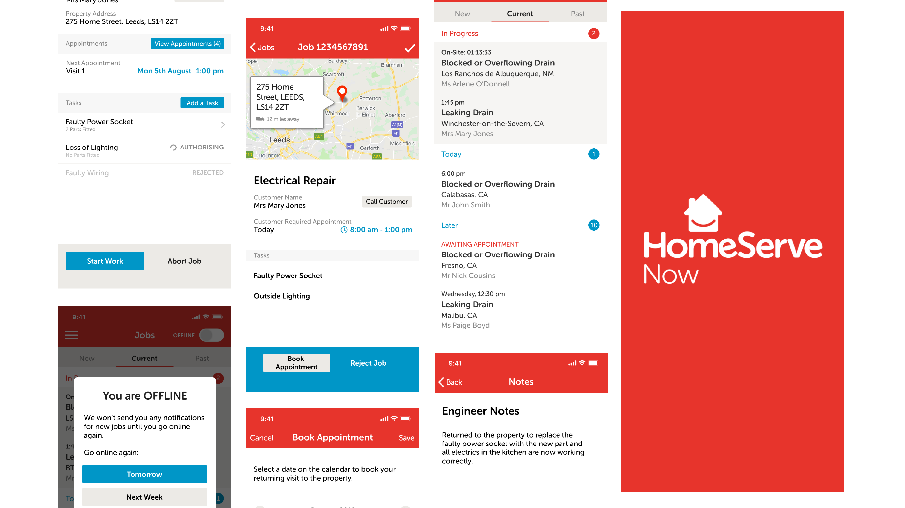

When I joined the team at Relative, I joined during an exciting period of growth for our main client. HomeServe Now is a branch off HomeServe Ltd, and aimed to use cutting-edge technology to create "the 'Uber' of Home Emergencies", as quoted in an article by The Sun.
This project created unparallelled growth for HomeServe Now, and propelled the company into the FTSE 100 in 2020. As a result, the UK based product expanded into the US market in the same year.
My role in this project was UI designer and illustrator. I took care of designing all visual elements for the product and creating an interactive prototype that could be passed to developers and used in stakeholder meetings.
Tools used: Adobe XD, Adobe Illustrator.
HomeServe Membership Ltd provides home emergency insurance cover and repairs to over 2 million customers across the UK and US.
HomeServe is always striving to imporve the quality and efficiencies of the services it provides to its customers, so they decided to take a risk and create a product that hadn't been seen in the home emergencies and repairs industry before. This is where HomeServe Now comes in.
Starting as a pilot project and having great success, we worked closely with the team at HomeServe Now to create a product that continuously improved the efficiency of the management involved in tracking jobs and payments for their contractors. Over the course of 10 months working on this project, we helped HomeServe Now improve their overall customer experience by simplifying the customer end-to-end journey, reduced the cost to serve by reducing the number of calls to HomeServe's Contact Centres therefore lowering the cost of repairs, and reduced the time to resolution whilst continuing to operate in a safe and compliant environment.
The product was a cross-platform mobile app with which we delivered 'over the air' updates and improvements for users several times a week. Our agile way of working, and goal of continuous improvement, meant that HomeServe could deliver solutions for their customers much faster than the business-as-usual process.
The concept behind the product was a realitvely simple one. Contractors would receive jobs through their app which they would accept on a first come, first served basis. The app would connect the contractor with the customer to discuss the issue, facilitate setting an appointment, then remind the contractor when it is time to go to the appointment. Once there, they can see job details, process parts needed for the job, make notes and keep track of costs. When the job is finished, the user can mark the job as complete, get customer sign off and generate an invoice so they can be paid. The app covers the full process for contractors, removing the mundane paperwork!

Working to a set of agile requirements, I redesigned the existing app which was used for the pilot. My aim was to simplify the UI and create a clear and consistent flow throughout the app.
Each feature was based off feedback that came from the contractors who use the app daily, and so I was able to design an interface that worked exactly as the users expected it to. As the app would be used on-the-go, it was important that buttons were easy to interact with, information had enough whitespace around it so it could be picked up at a glance, and the overall look of the job details screen wasn't complicated.
Certain instances in the app called for onboarding or notice screens, which gave me the opportunity to integrate some illustrations into the UI, allowing us to add more character to the brand. Below is some examples of these illustrations!

I had brand guidelines from HomeServe Now to adhere to, which involved blue and red together. These colour can pose issues when it comes to contrast as they don't mix well together, particularly in user interface design. As these were the company's colours, I had to use them sparsely and ensure that there were no overlapping areas, or that the colours weren't used too close together to avoid readability issues.
With unparalleled growth came a demand for more clients looking to get onboarded with HomeServe Now. To handle this, we decided to create a system which would handle companies signing up, collecting all relevant information and documentation, as well as guiding them through the process whilst maintaining transparency at all times.
I designed the onboarding portal over a period of 2 days to meet a tight deadline in order for the team to pitch the idea at the request of their stakeholders. I used Adobe XD to create an interactive prototype which they could use to test the portal with a group of their users.
Jumping straight into such a huge and rapidly-growing project was challenging as a new designer in the team, but I enjoyed working on this project. This project taught me the fundamentals of Agile, why working iteratively is important, and how useful user feedback can be when you work directly with you users and let them inform product decisions. This was also the first time I was involved in localisation of an app design, and we had to take some considerations around the design because the US commonly has longer city names than the UK, and so I had to redesign parts of the app to accommodate this. It wasn't much, but it was a nice introduction to localisation
Of course, it's always nice to work on a project that garners great success for the client's company, so seeing this app propel HomeServe into the FTSE 100 was a rewarding experience.